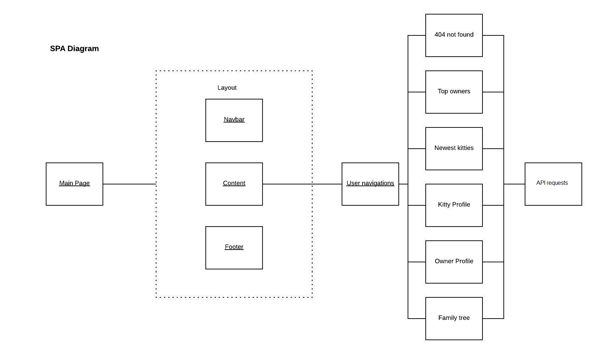
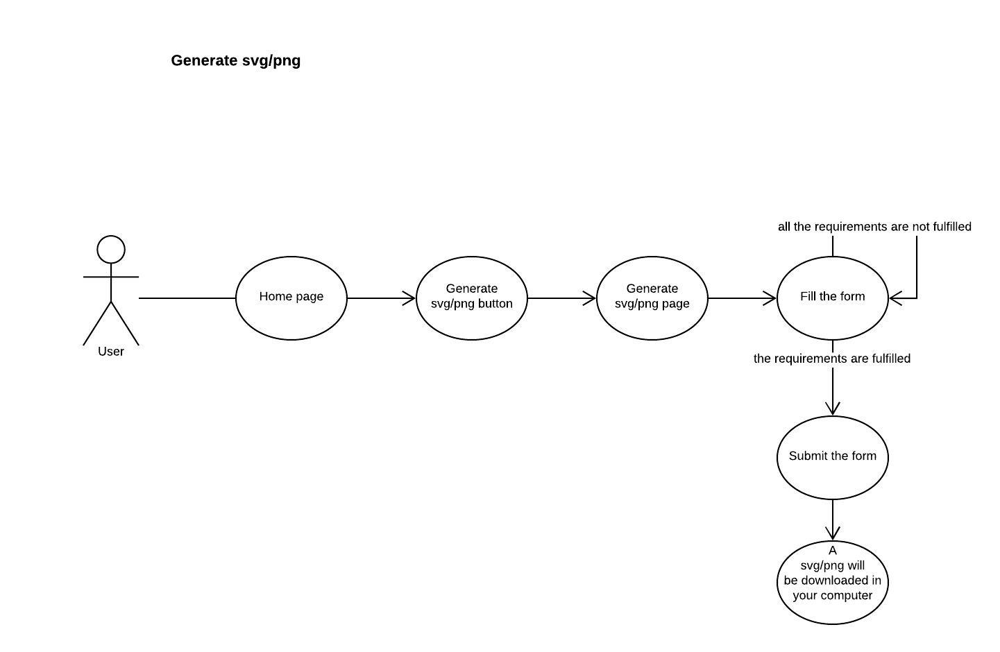
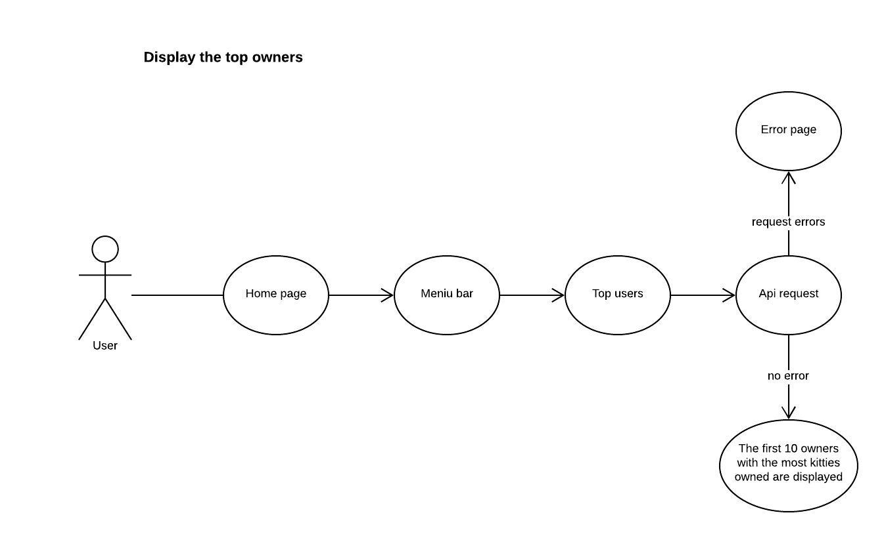
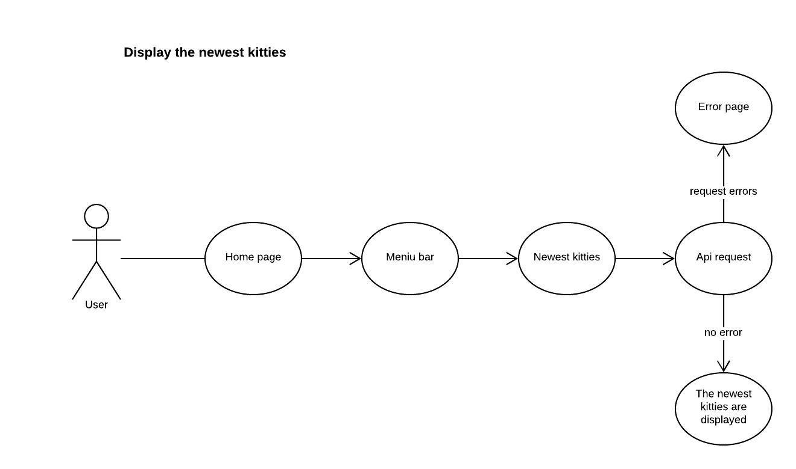
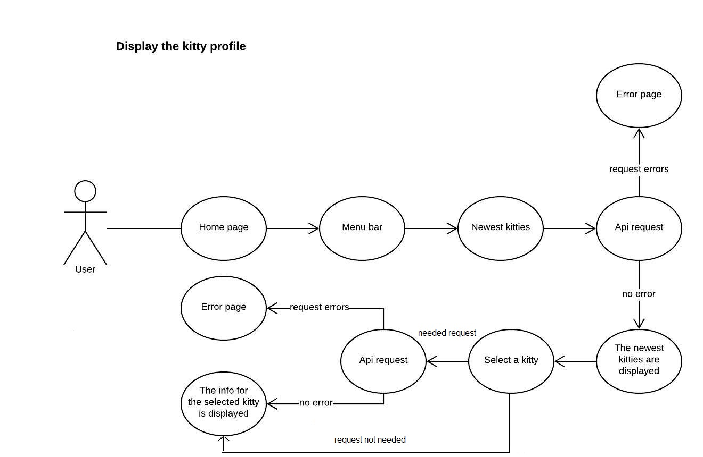
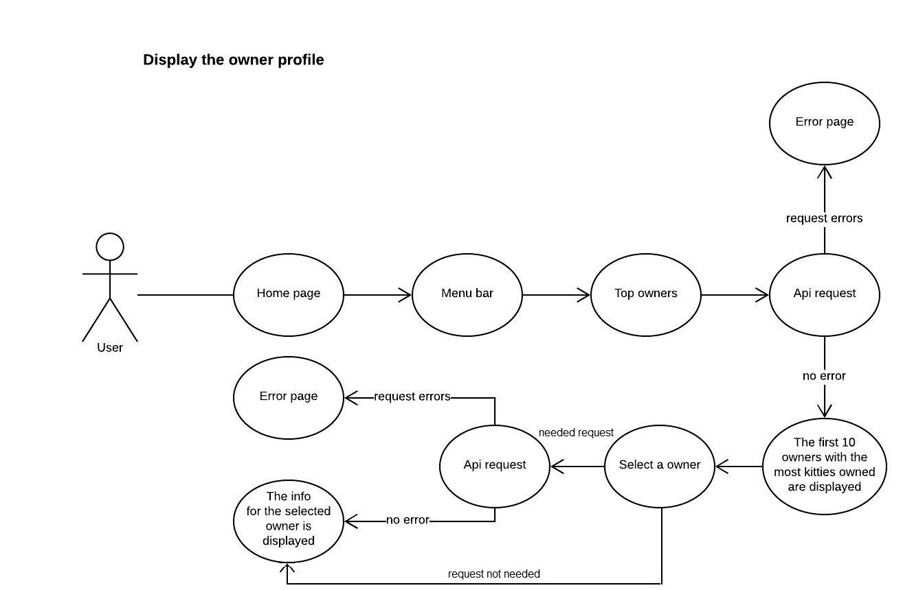
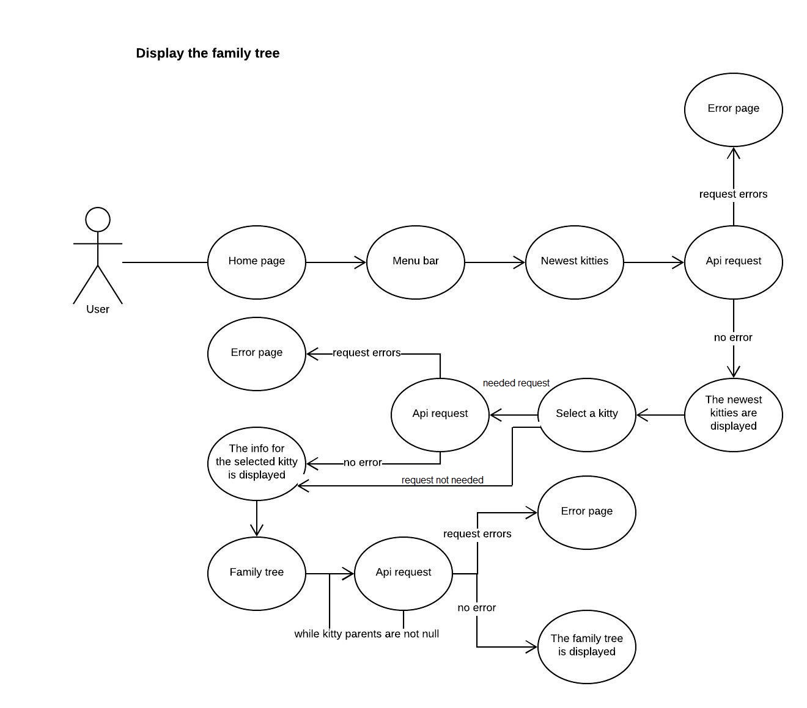
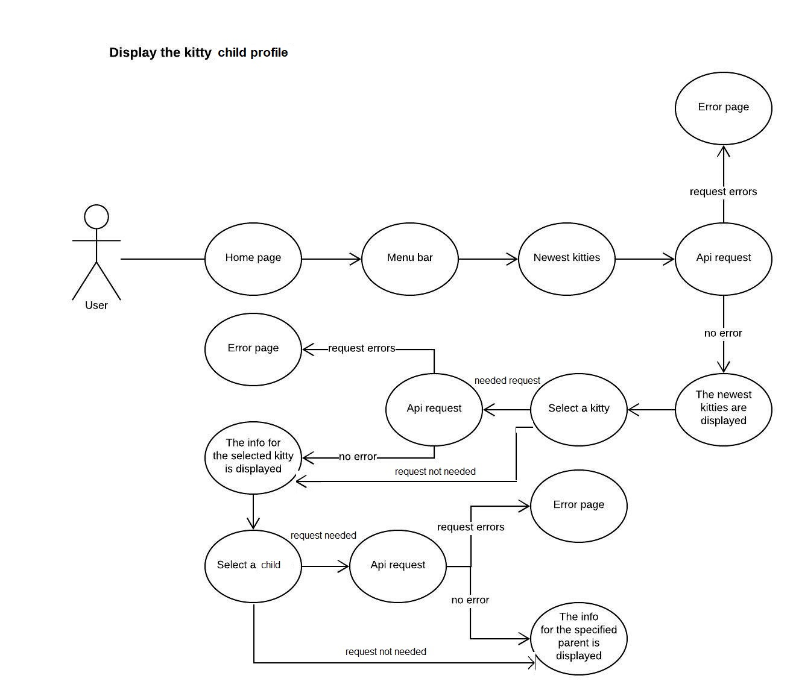

Introducere
Aceasta aplicatie web ofera oportunitatea de a putea vizualiza evolutia pisicilor digitale cum ar fi cei mai importanti proprietari,
cele mai noi pisici, profilul unei pisici, profilul unui proprietar si arborele genealogic al unei pisici.
Tipuri de utilizatori
Nu exista tipuri specifice de utilizatori, deoarece aplicatia nu foloseste sisteme de log-in/sign-in,
si nici nu are o baza de date ce trebuie gestionata.
Arhitectura generala
Structura SPA

Avem pagina principala, ce va primi datele ce trebuie afisate in cadrul ei.Ea
este compusa din navbar, content si footer. Content este partea paginii ce variaza in functie de navigarile
utilizatorului.Pe baza rutelor accesate paginile corespunzatoare vor fi incarcate in pagina pricipala, iar
ele la randul lor is vor face requesturile necesare pentru obtinerea de date.
Routele
Se foloseste un server http pentru a putea implementa o structura SPA. Ruta este formata din localhost si numele paginii si parametrii daca pagina respectiva are nevoie.
Parametrii sunt transmisi prin rute si ne ajuta la comunicarea dintre paginii astfel ca putem incarca in pagina datele in functie de alegerea utilizatorului.
Pentru rutele invalide (404 not found) va aparea o pagina customizata.
Requesturi
Apelam doar requesturi de get, deoarece nu avem o baza de date unde sa stocam datele.
Api-urile folosite sunt urmatoarele:
"https://api.cryptokitties.co/kitties?limit=100&offset=0&generation=25" - pentru pagina "newest kitties"
"https://api.cryptokitties.co/kitties/{{id-pisica}}" - pentru profilul pisicii si arborele genealogic
"https://api.cryptokitties.co/kitties?owner_wallet_address={{wallet-adress}}=100&offset=0" - pentru profilul utilizatorului si top owners
Limita pentru get-uri a fost de 20 de itemi, astfel ca sunt unele restrictii pentru pagina newest kitties si profilul utilizatorului.
Pentru ca nu avem la dispozitie un API pentru a accesa mai multi utilizatori, pagina de top users afiseaza topul proprietarilor accesati de utilizator pana la momentul respectiv.
- Profilul pisicii -> contine informatiile unei pisici
- Profilul proprietarului -> contine informatiile unui proprietar
- Topul celor mai noi pisici
- Topul celor mai buni proprietari, bazat pe numarul de pisici detinute.
- Home page -> contine scurta descriere si functionalitatea de a generea rapoarte
- Pagina de generare rapoarte -> contine un formular pe baza caruia vor fi
generate rapoartele
Modelarea de date
1.Date proprii
Aplicatia nu are o baza de date in care sa fie stocate datele deoarece informatiile
sunt preluate direct de la sursa prin API-uri publice puse la dispozitie.
2.Date externe
Pentru a folosi informatiile primite prin requesturi api, ele vor fi transformate
in obiecte de tip javascript.Obiectele json sunt preluate si mapate la obiecte javascript.
Soluţiile de stocare disponibile la nivel de client
Unele elemente sunt stocate in liste, pentru o prelucrare mai usoara a datelor.
Scenarii de utilizare
1.Generate svg/png
- Utilizatorul acceseaza home page
- Ultilizatorul da click pe butonul "Generate svg/png", iar apoi este redirectionat catre pagina ce contine
un formular ce trebuie completat pentru a putea genera repoartele dorite
- Utilizatorul completeaza formularul pana cand toate campurile formularului vor fi valide, daca nu sunt, utilizatorul
nu va avea acces la butonul ce genereaza raportul
- Dupa ce formularul este completat cu date valide, butonul de sub formular este apasat"Generate", iar un raport
va fi downloadat in calculatorul utilizatorului.

2.Display the top owners
- Utilizatorul acceseaza home page;
- Utilizatorul acceseaza bara de meniu care se extine si contine 2 pagini pe care le poate accesa: top users
and the newest kitties.
- Pagina "top users" este aleasa din meniu, iar un request api este facut pentru a aduce proprietarii pisicilor.
- Daca nu apar erori, sunt afisati primii 10 proprietari ce detin cele mai multe pisici, daca apar, utilizatorul
este redirectat catre pagina "404 not found".

3.Display the newest kitties
- Utilizatorul acceseaza home page;
- Utilizatorul acceseaza bara de meniu care se extine si contine 2 pagini pe care le poate accesa: top users
and the newest kitties.
- Pagina "newest kitties" este aleasa din meniu, iar un request api este facut pentru a aduce pisicile.
- Daca nu apar erori, sunt afisate ultimele pisici aparute, altfel, utilizatorul este redirectat catre pagina
"404 not found".

4.Display the kitty profile
- Utilizatorul acceseaza home page;
- Utilizatorul acceseaza bara de meniu care se extine si contine 2 pagini pe care le poate accesa: top users
and the newest kitties.
- Pagina "newest kitties" este aleasa din meniu, iar un request api este facut pentru a aduce pisicile.
- Daca nu apar erori, sunt afisate ultimele pisici aparute, altfel, utilizatorul este redirectat catre pagina
"404 not found".
- Dupa ce sunt afisate ultimele pisici aparute utilizatorul acceseaza cardul unei pisici din cele afisate.Se
verifica in lista ce contine istoricul pisicilor daca pisica respectiva a mai fost acceseata de utilizator
in trecut,daca raspunsul este negativ se face un api request cu id-ul respectiv pisicii, si este adaugata
in lista.Daca este pozitiv, informatiile sunt afisate direct din lista respectiva.
- Daca este nevoie de un request api, daca nu au fost intampinate erori, sunt afisate informatiile pisici,
altfel, utilizatorul este redirectat catre pagina "404 not found".
Profilul pisicii poate fi accesat si din top owners -> select owner -> select kitty of the owner;pe aceleasi principii descrise
mai sus.

5.Display the owner profile
- Utilizatorul acceseaza home page;
- Utilizatorul acceseaza bara de meniu care se extine si contine 2 pagini pe care le poate accesa: top users
and the newest kitties.
- Pagina "top users" este aleasa din meniu, iar un request api este facut pentru a aduce proprietarii pisicilor.
- Daca nu apar erori, sunt afisati primii 10 proprietari ce detin cele mai multe pisici, daca apar, utilizatorul
este redirectat catre pagina "404 not found".
- Dupa ce sunt afisati cei mai buni proprietari utilizatorul acceseaza cardul unui proprietar din cei afisati.Se
verifica in lista ce contine istoricul proprietarilor daca proprietarul respectiv a mai fost accesat de utilizator
in trecut,daca raspunsul este negativ se face un api request cu id-ul respectivului proprietar, si este adaugat
in lista.Daca este pozitiv, informatiile sunt afisate direct din lista respectiva.
- Daca este nevoie de un request api, daca nu au fost intampinate erori, sunt afisate informatiile proprietarului,
altfel, utilizatorul este redirectat catre pagina "404 not found".
Profilul proprietarului poate fi accesat si din the newest kitties -> select kitty -> select owner; pe aceleasi principii
descrise mai sus.

6.Display the family tree
- Utilizatorul acceseaza home page;
- Utilizatorul acceseaza bara de meniu care se extine si contine 2 pagini pe care le poate accesa: top users
and the newest kitties.
- Pagina "newest kitties" este aleasa din meniu, iar un request api este facut pentru a aduce pisicile.
- Daca nu apar erori, sunt afisate ultimele pisici aparute, altfel, utilizatorul este redirectat catre pagina
"404 not found".
- Dupa ce sunt afisate ultimele pisici aparute utilizatorul acceseaza cardul unei pisici din cele afisate.Se
verifica in lista ce contine istoricul pisicilor daca pisica respectiva a mai fost acceseata de utilizator
in trecut,daca raspunsul este negativ se face un api request cu id-ul respectiv pisicii, si este adaugata
in lista.Daca este pozitiv, informatiile sunt afisate direct din lista respectiva.
- Daca este nevoie de un request api, daca nu au fost intampinate erori, sunt afisate informatiile pisici,
altfel, utilizatorul este redirectat catre pagina "404 not found".
- Pe profilul pisicii accesam butonul "see family tree".Se efectueaza un apel recursiv pana cand nu se mai
gasesc parinti pentru o anumita pisica.
- Daca nu apar erori, arborele este afisat, altfel, utilizatorul este redirectat catre pagina "404 not found".
Profilul pisicii poate fi accesat si din top owners -> select owner -> select kitty of the owner;pe aceleasi principii descrise
mai sus.

7.Display the kitty child profile
- Utilizatorul acceseaza home page;
- Utilizatorul acceseaza bara de meniu care se extine si contine 2 pagini pe care le poate accesa: top users
and the newest kitties.
- Pagina "newest kitties" este aleasa din meniu, iar un request api este facut pentru a aduce pisicile.
- Daca nu apar erori, sunt afisate ultimele pisici aparute, altfel, utilizatorul este redirectat catre pagina
"404 not found".
- Dupa ce sunt afisate ultimele pisici aparute utilizatorul acceseaza cardul unei pisici din cele afisate.Se
verifica in lista ce contine istoricul pisicilor daca pisica respectiva a mai fost acceseata de utilizator
in trecut,daca raspunsul este negativ se face un api request cu id-ul respectiv pisicii, si este adaugata
in lista.Daca este pozitiv, informatiile sunt afisate direct din lista respectiva.
- Daca este nevoie de un request api, daca nu au fost intampinate erori, sunt afisate informatiile pisici,
altfel, utilizatorul este redirectat catre pagina "404 not found".
- Este selectat un pui al pisicii.Se verifica in lista ce contine istoricul pisicilor daca pisica respectiva
a mai fost acceseata de utilizator in trecut,daca raspunsul este negativ se face un api request cu id-ul
respectiv pisicii, si este adaugata in lista.Daca este pozitiv, informatiile sunt afisate direct din lista
respectiva.
- Daca este nevoie de un request api, daca nu au fost intampinate erori, sunt afisate informatiile pisici,
altfel, utilizatorul este redirectat catre pagina "404 not found".
Profilul pisicii poate fi accesat si din top owners -> select owner -> select kitty of the owner;pe aceleasi principii descrise
mai sus.

7.Display the kitty parent profile
- Utilizatorul acceseaza home page;
- Utilizatorul acceseaza bara de meniu care se extine si contine 2 pagini pe care le poate accesa: top users
and the newest kitties.
- Pagina "newest kitties" este aleasa din meniu, iar un request api este facut pentru a aduce pisicile.
- Daca nu apar erori, sunt afisate ultimele pisici aparute, altfel, utilizatorul este redirectat catre pagina
"404 not found".
- Dupa ce sunt afisate ultimele pisici aparute utilizatorul acceseaza cardul unei pisici din cele afisate.Se
verifica in lista ce contine istoricul pisicilor daca pisica respectiva a mai fost acceseata de utilizator
in trecut,daca raspunsul este negativ se face un api request cu id-ul respectiv pisicii, si este adaugata
in lista.Daca este pozitiv, informatiile sunt afisate direct din lista respectiva.
- Daca este nevoie de un request api, daca nu au fost intampinate erori, sunt afisate informatiile pisici,
altfel, utilizatorul este redirectat catre pagina "404 not found".
- Este selectat un parinte al pisicii.Se verifica in lista ce contine istoricul pisicilor daca pisica respectiva
a mai fost acceseata de utilizator in trecut,daca raspunsul este negativ se face un api request cu id-ul
respectiv pisicii, si este adaugata in lista.Daca este pozitiv, informatiile sunt afisate direct din lista
respectiva.
- Daca este nevoie de un request api, daca nu au fost intampinate erori, sunt afisate informatiile pisici,
altfel, utilizatorul este redirectat catre pagina "404 not found".
Profilul pisicii poate fi accesat si din top owners -> select owner -> select kitty of the owner;pe aceleasi principii descrise
mai sus.
Manual de utilizare
HomePage - Ce ofera o scurta descriere a aplicatiei.
Apsand pe meniu va aparea un pop-up de unde puteti selecta urmatoarele :
Newest kitties - Ce va ofera o lista cu cele mai noi pisci in functie de data crearii lor.
Top owners - Ce va ofera o lista cu toti proprietarii accesati de voi pana la momentul respectiv, ordonati in functie de numarul depisici detinute.
Din Newest kitties puteti ajunge pe profilul pisicii. Aici puteti vedea informatii generale dspre pisica respectiva :
nume, proprietar,parinti etc. Din aceasta pagina puteti ajunge la : profilul proprietarului, la arborele genealogic , sau la profilul parintilor/
copiilor.
Profilul proprietarului va contine cateva piscii detinute de acesta. De pe aceasta pagina puteti accesa profilul pisicii.
Arborele genealogic ofera parintii si bunicii pisicii.De pe aceasta pagina puteti accesa profilul pisicii.
Directii viitoare
O mai buna performanta a aplicatiei si partea de genarare de rapoarte.
Alte informatii
Fisierele css si javascript sunt incarcate o data cu html-ul paginii respective.Incarcarea atat
a html-ului cat si a js-ului se face cu ajutorul unor functii javascript si template-uri.
Pagina default este home page-ul, ce descrie putin aplicatia oficiala.
Am pasat date de la o pagina la alta atat prin url cat si prin localStorage.
References
- https://blockgeeks.com/guides/cryptokitties/
- https://www.cryptokitties.co/
- https://www.w3schools.com/css/
- https://github.com/w3c/scholarly-html